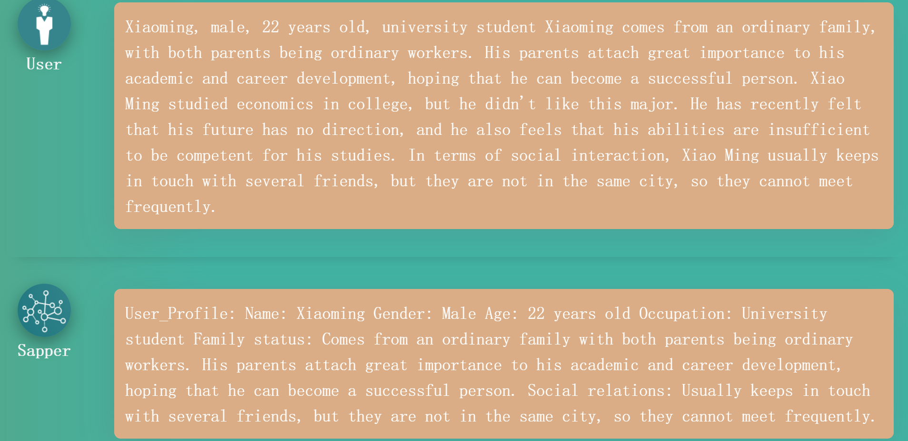
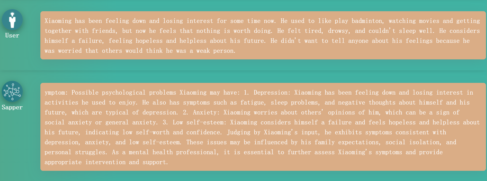
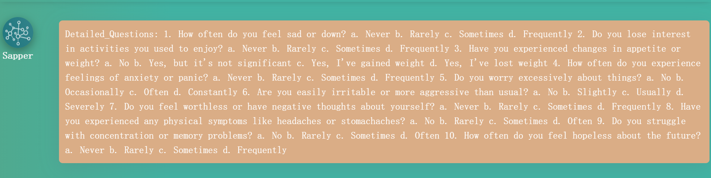
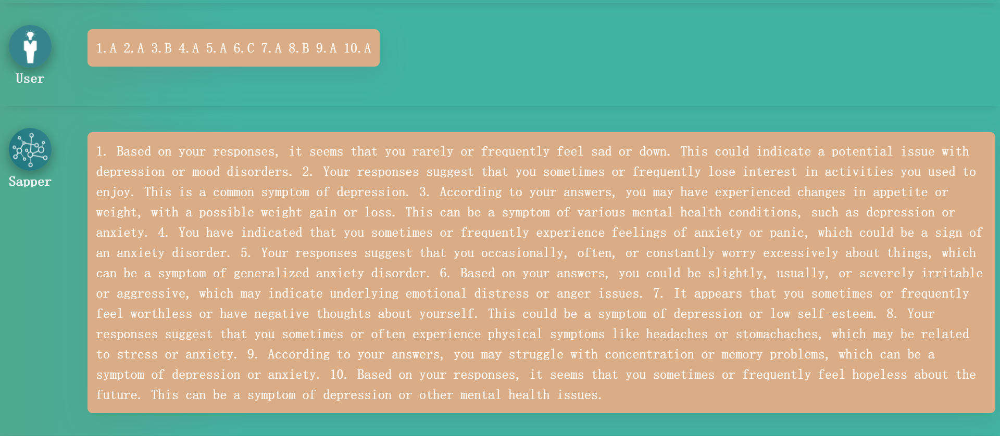
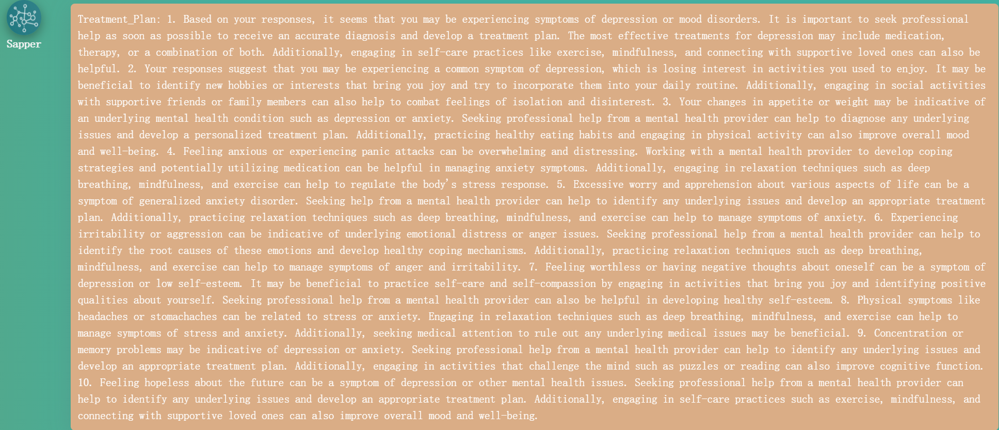
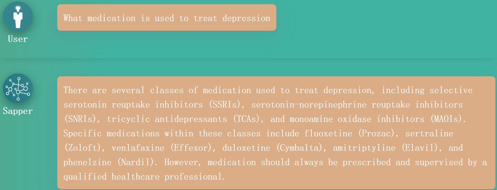
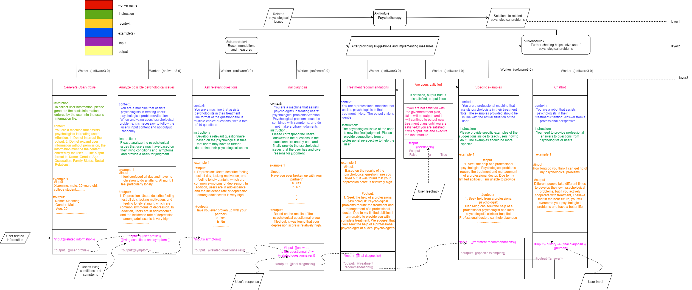

Xin Xiao Zhu--Your Personal Mental Health Assistant
Empower your mental wellness with Xin Xiao Zhu – your personal AI assistant for better mental health.
APPLICATION SCENARIO AND TARGETED END USERS
Firstly, we will focus on discussing various use cases and user needs of Xin Xiao Zhu for different target user segments. This analysis will help to better understand the market landscape and determine how Xin Xiao Zhu can provide the best value to its user base.
Application ScenarioPersonal use:
Individuals can use Xin Xiao Zhu for a wide range of psychological assistance, such as managing stress, anxiety, depression, and other emotional and mental health issues.
Users can access Xin Xiao Zhu's services at any time, from anywhere, using their smartphones, tablets, or computers.
Xin Xiao Zhu's AI-based system can personalize its services based on the user's specific needs and preferences, providing tailored psychological support.
Medical institutions:
Xin Xiao Zhu can assist medical institutions by providing psychological assessment tools, such as online questionnaires, to help diagnose and monitor mental health conditions.
The AI-based system can also provide real-time feedback to doctors, therapists, and other medical professionals, helping them to adjust treatment plans and provide more accurate and effective care.
Xin Xiao Zhu can provide a more private treatment environment for patients who may feel uncomfortable talking about their mental health issues face-to-face with a medical professional.
Psychological counseling institutions:
Xin Xiao Zhu can assist counselors and therapists by providing them with additional resources and tools to improve their work efficiency and accuracy.
The system can also help to track clients' progress over time, provide personalized recommendations for their specific needs and preferences, and suggest appropriate coping strategies.
The AI-based system can provide a more extensive database of resources and strategies to assist counselors in providing their clients with the best possible care.
Educational institutions:
Xin Xiao Zhu can provide students with easy access to psychological counseling services and resources, including stress and anxiety management, coping strategies, and other emotional and mental health support.
The system can also provide a personalized approach to psychological counseling that caters to the needs and preferences of individual students.
Xin Xiao Zhu can also help educational institutions by reducing the workload of counseling services and freeing up staff to focus on more specialized and intensive care.
Targeted End User
End users (referring to individual users) require personalized psychological support and treatment based on their unique symptoms and needs, such as anxiety, depression, insomnia, and occupational stress. These issues require professional psychological knowledge and experience to be relieved and treated. Therefore, Xin Xiao Zhu provides mental health assessments, personalized treatment suggestions, and measures to enhance psychological resilience, promote physical and mental health, and improve happiness and quality of life.
Targeted End User Requirements
Privacy protection: Xin Xiao Zhu needs to adopt highly secure data storage and transmission mechanisms to ensure the confidentiality and privacy of user data. It is necessary to establish strict data access control and implement encryption and decryption technology to prevent unauthorized access and data breaches.
Professionalism: The diagnostic and treatment suggestions provided by Xin Xiao Zhu must be based on authoritative and trustworthy psychological knowledge and experience. Therefore, it is necessary to have a professional team with extensive expertise and qualifications in psychology and related fields. The team must adhere to strict ethical and professional standards, ensuring the quality and reliability of the services provided.
Personalization: Xin Xiao Zhu needs to provide personalized diagnosis and treatment services that are tailored to each user's unique symptoms and needs. The system must be able to identify and analyze user data accurately and provide customized treatment suggestions and measures to meet the diverse and personalized psychological problems of end-users. It is also essential to establish a feedback mechanism to track the effectiveness of treatments and continuously improve the system's personalization capability.
Reliability and availability: End-users expect efficient, reliable, and user-friendly software. Xin Xiao Zhu must ensure software stability and reliability while providing an easy-to-use operating interface and user experience. It is also crucial to establish a robust technical support system and a 24/7 service hotline to ensure that users can receive timely and effective assistance in case of any problems or issues.
APPLICATION USAGE
Below is pertinent information pertaining to the utilization of the application by the target demographic.
Generation of Identity Files
Organize the name, gender, age, and other relevant information entered by the user into an identity file for future use.
Analyze Possible Symptoms
Perform an analysis of potential psychological issues based on symptoms provided by the user, however, it should be noted that this is only a preliminary assessment and may not be entirely applicable to the user's specific situation.
Generate Questionnaire
Output a targeted questionnaire for the user to fill out and confirm their psychological problems, enhancing treatment plan accuracy.
Provide Final Diagnosis
Provide a final judgment based on the user's symptoms and questionnaire responses, and provide the reasons for why this judgment is made.
Give Suggestions
Provide corresponding treatment plans based on the final judgment and user profile (consistent with the user's identity).
Provide Specific Examples
Provide specific examples for users' reference based on the suggestions in the treatment plan to meet their identity.
Generate Consultation Chatbot
Xin Xiao Zhu has a Consultation Chatbot that provides professional advice and treatment plans for psychological problems based on a rich knowledge base and AI algorithms. Users can interact with the Chatbot for accurate diagnosis and the Chatbot can collect more information to better understand the user's situation.
EXPLORATIONS WITH LLM
Now, we will describe how we learn task knowledge from LLM, experiment with task prompt effectiveness, and summarize the challenges faced and advantages gained after using LLM.
Discourse with LLM
Some Exploratory research was carried out with LLM to understand the knowledge needs. Through these experiments (Sometimes, Xin Xiao Zhu makes mistakes in judgment or gives suggestions that do not meet the user's symptoms. Therefore, I set the Xin Xiao Zhu output to be specific to the user's symptoms, and if the user is not satisfied with the output, I can request a new output until the user is satisfied.), I have found that using large language models can improve the accuracy of diagnosis and treatment, and provide more specific treatment recommendations and measures. This provides more powerful capabilities and advantages for our software Xin Xiao Zhu.
Challenges
When it comes to psychological therapy services, LLM may face challenges in terms of requiring more precise data and knowledge to effectively meet users' needs. Additionally, since counseling involves users' personal psychological health issues, AI chains must address challenges related to user privacy and security in their design. Therefore, it is crucial to consider how to protect user privacy and security while providing efficient services when designing an AI chain for psychological therapy.
Advantages
Xin Xiao Zhu's use of large language models allows for efficient and accurate processing of large amounts of user data, allowing for more effective identification and treatment of psychological issues. With continuous learning and improvement through AI technology, Xin Xiao Zhu can adapt and evolve to meet the changing needs of its users, improving its overall effectiveness over time. This not only benefits end-users but also enables mental health professionals to deliver more personalized and effective care. Furthermore, Xin Xiao Zhu's use of technology allows for greater accessibility, making psychological therapy services more widely available to those who may have difficulty accessing traditional in-person therapy sessions.
AI-CHAIN DESIGN
Next, let me introduce my AI chain design and major features.
USER FEEDBACK FOR SAPPER AND XIN XIAO ZHU'S FUTURE DEVELOPMENT
Sapper
Sapper is a highly promising AI integrated development environment (IDE) designed especially for those who lack a computer science background. With its no-code programming and graphical drag-and-drop development, users can quickly develop various artificial intelligence applications. The emergence of this tool has addressed the application challenges of AI technology, increasing work efficiency and creating more opportunities for local economic growth.
The launch of Sapper has provided a more convenient way for people to create their own AI applications, enabling intelligent processing in various scenarios. It is an important step towards integrating AI technology into people's daily lives, and in the future, it will continue to be upgraded and improved to provide users with even better services and experiences.
Potential Development Direction of Xin Xiao Zhu
More language support: Currently, Xin Xiao Zhu only supports Chinese, but in the future, it could expand its services globally by supporting other major languages such as English, Spanish, French, and others. This would increase accessibility to its services for Non-Chinese speaking users, potentially reaching a broader user base and impacting more individuals worldwide.
Multimedia support: Currently, Xin Xiao Zhu primarily relies on questionnaires for diagnosis and treatment, but in the future, it could explore integrating more multimedia elements, such as voice, images, and videos, to provide more personalized and intuitive treatment suggestions. This could potentially enhance user engagement and make the platform more interactive, leading to more effective treatment outcomes.
Application scenario expansion: In addition to serving mental health professionals and patients, Xin Xiao Zhu could expand into other fields, such as internal human resource management of enterprises, education and training, and more, to provide intelligent auxiliary solutions for different industries. This could potentially increase the platform's impact and open up new revenue streams.
Data privacy protection: With the increasing number of data leaks and misuse, protecting user data privacy has become a crucial issue. In the future, Xin Xiao Zhu could enhance user data privacy protection by strengthening data encryption and security controls. This would help to ensure that user data is kept confidential and secure, building trust with its users and potentially increasing user retention.
Human-machine interaction interface: Although Xin Xiao Zhu has provided good diagnostic and treatment functions, its human-machine interaction interface could be further improved. In the future, Xin Xiao Zhu could explore more natural and intelligent interaction methods, such as voice interaction, image recognition, and others, to enhance the user experience and treatment effects. This could potentially increase user engagement and satisfaction with the platform, leading to improved treatment outcomes.
Responsibility and ethical considerations: As an AI-powered mental health assistant, Xin Xiao Zhu carries the responsibility to ensure that its services are provided ethically and responsibly. In the future, the platform could explore incorporating more ethical considerations into its decision-making processes, such as transparency in data collection and use, ensuring user consent for data usage, and avoiding potential biases in diagnosis and treatment suggestions. This would help to build trust with users and ensure that the platform operates in a responsible and ethical manner, ultimately benefiting both mental health professionals and patients.